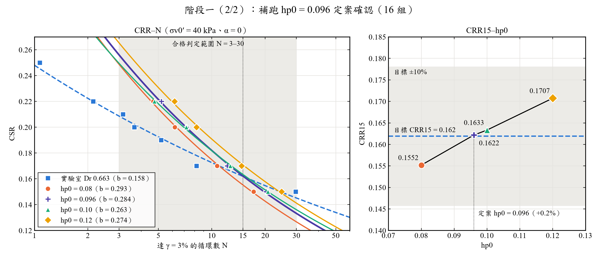
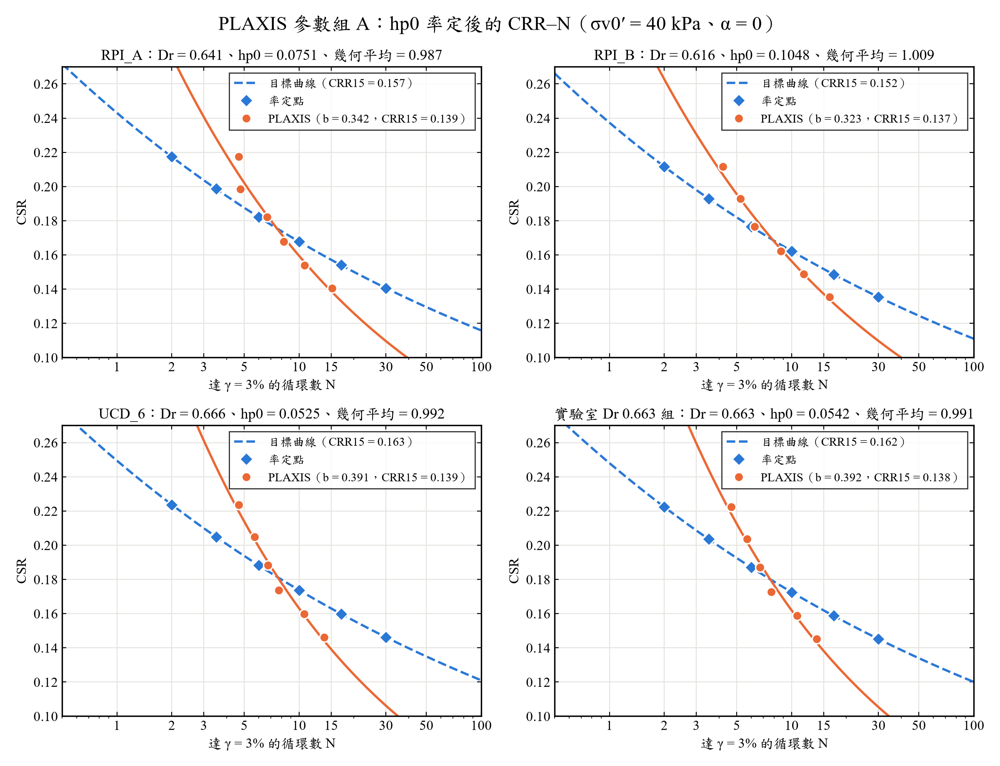
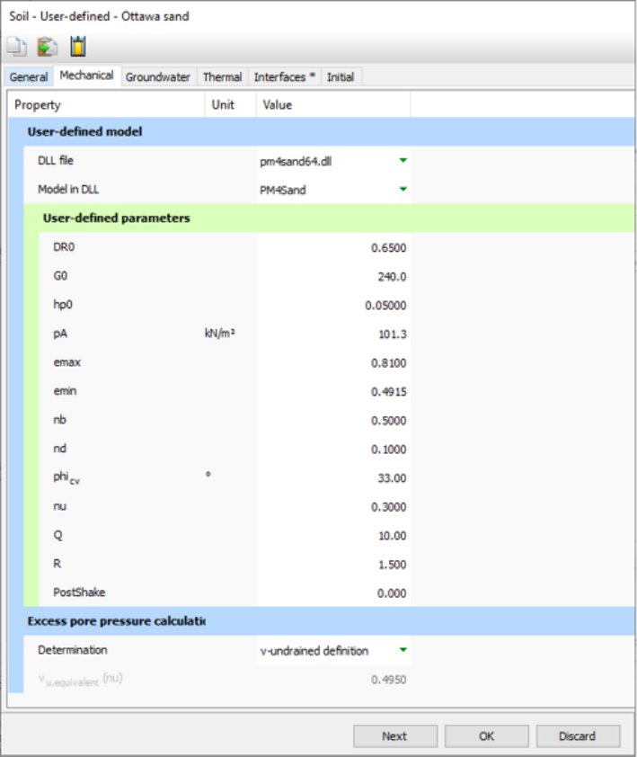
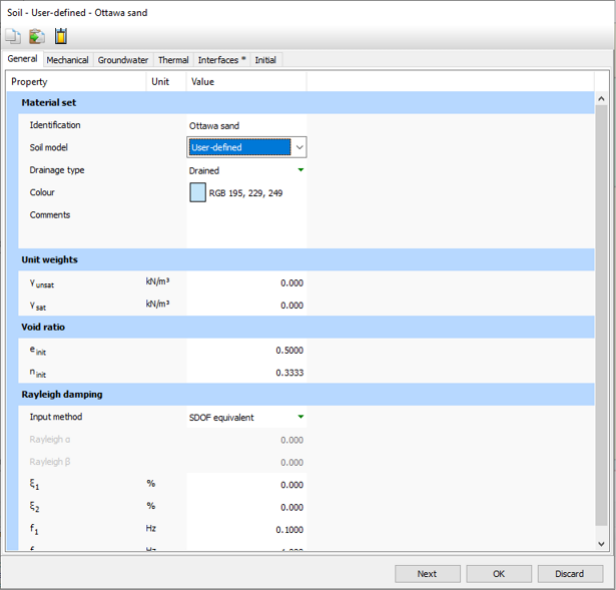
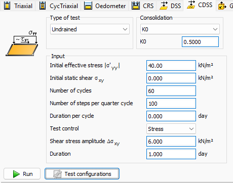

Material Model – PM4Sand
PM4Sand 用「應力比」描述砂土：四個面隨相對密度與圍壓移動，收縮造成孔隙水壓上升，剪脹與組構（fabric）讓液化後的剪應變一圈一圈累積。參數只有十多個，最重要的 DR0、G0、hp0 三個；其中 hp0 要用循環單剪對液化阻抗曲線率定。
PM4Sand 怎麼由應變算出應力？為什麼不排水循環剪會液化？hp0 要怎麼率定、在 PLAXIS 裡怎麼用？
模型概念與適用範圍
PM4Sand 是應力比控制、與臨界狀態相容的邊界面塑性模型，以 Dafalias–Manzari 的砂土模型為骨架，為地震液化分析加上許多修改：讓液化阻抗曲線的斜率、圍壓效應（Kσ）、靜偏剪效應（Kα）、液化後的剪應變累積與震後再壓密都更接近工程經驗。
和 Mohr-Coulomb 的差別
MC 在降伏面內是線彈性，循環載重下不會累積孔隙水壓。PM4Sand 的降伏面是應力比空間中的一個小錐，幾乎一受剪就產生塑性體積應變；不排水時體積不能變，塑性收縮只能由有效應力下降來抵銷，孔隙水壓就一圈一圈上升。
只能用於 2D 平面應變
模型以平面內的三個應力分量（σ′xx、σ′yy、τxy）定義，平均有效應力取 p = (σ′xx + σ′yy)／2。平面外的 σ′zz 只用線彈性另外算，不參與模型行為。PLAXIS 的 SoilTest 也因此只能做 DSS 與 CDSS。
靠狀態變數記住歷史
除了應力，還要記背應力比 α、上次反轉點 αin、組構張量 z 與它的累積量 zcum 等約 30 個狀態變數。PLAXIS 在第一個使用 PM4Sand 的階段開始時初始化，並記下 σ′v0 作為 ru 的分母。
適合與不適合
適合：地震時砂土的孔隙水壓上升、液化、液化後的側向流動與沉陷。不適合：靜態施工階段的變形（靜態行為較不準），所以重力、施工階段要先用其他組成律，到動力階段才換成 PM4Sand。
臨界狀態與相對狀態指數 ξR
砂土會收縮還是剪脹，取決於它比臨界狀態「密」還是「鬆」。PM4Sand 用相對密度來量這個差距：同一個平均有效應力 p 下，臨界狀態線對應一個相對密度 DR,cs，目前的 DR 與它的差就是相對狀態指數 ξR。
- ξR < 0：比臨界狀態密，剪動時傾向剪脹；ξR > 0：比臨界狀態鬆，傾向收縮。
- DR,cs 隨 p 增加而增加：同一個砂，圍壓越大越「鬆」，剪脹性越弱，這就是 Kσ 效應的來源。
- Q、R 是臨界狀態線參數，預設 10、1.5（R 由石英砂常用的 1.0 提高到 1.5，讓臨界狀態線較低，較符合單剪結果）。
- 排水剪動時體積改變會更新 DR；不排水時 DR 不變，ξR 只隨 p 變。
應力比空間中的四個面
PM4Sand 只看應力比 r = s／p（s 為偏應力），不直接看應力大小。平面應變下的偏應力只有兩個獨立分量，所以 r 可以畫在一個平面上：橫軸 ryy = (σ′yy − σ′xx)／(σ′xx + σ′yy)，縱軸 rxy = τxy／p。在這個平面上，各個「面」都是以原點為圓心的圓：
| 面 | 應力比 | 作用 |
|---|---|---|
| 降伏面 | 半徑 m／2，m = 0.01 | 很小的圓，圓心是背應力比 α；應力比在圓內為彈性 |
| 剪脹面 | Md = M·end·ξR | α 在它以內收縮、以外剪脹（相變線） |
| 臨界狀態面 | M = 2 sin φcv | 剪到臨界狀態時 ξR → 0，Mb、Md 都趨近 M |
| 邊界面 | Mb = M·e−nb·ξR | 應力比的上限，控制峰值強度與塑性模數 |
比臨界狀態鬆（ξR > 0）時，nb 改用 nb／4、nd 改用 4·nd。圓的半徑寫成 M／2，是因為 τ／p = sin φ 時 M = 2 sin φ。
由目前的 α 沿降伏面法向 n 延伸，在邊界面與剪脹面上得到兩個「影像點」：
$$\mathbf n = \frac{\mathbf r - \boldsymbol\alpha}{m/\sqrt2}$$ $$\boldsymbol{\alpha}^b = \tfrac{1}{\sqrt2}\left(M^b - m\right)\mathbf n,\qquad \boldsymbol{\alpha}^d = \tfrac{1}{\sqrt2}\left(M^d - m\right)\mathbf n$$α 到 αb 的距離決定塑性模數 Kp（越近越軟），α 到 αd 的距離決定剪脹量 D 的正負與大小。
降伏面很小，所以 α 幾乎就等於目前的應力比 r。判斷收縮或剪脹，只要看目前的應力比在剪脹面（藍圈）裡面還是外面；離邊界面（紅圈）越近，同樣的應力增量產生越大的塑性應變。
彈性勁度、塑性模數與應力增量
彈性勁度
$$G = G_0\,p_A\sqrt{\frac{p}{p_A}}\;C_{SR}\;\frac{1 + z_{cum}/z_{max}}{1 + C_{GD}\,z_{cum}/z_{max}},\qquad K = \frac{2(1+\nu)}{3(1-2\nu)}\,G$$- G 隨 √p 增加，G0 是無因次係數；有剪力波速時以 G = ρVs² 率定，沒有時可用 G0 = 167√(46 DR² + 2.5)。
- CSR：應力比越接近邊界面，G 越低。
- 組構累積（zcum）後 G 會衰減，最多降到 1／CGD（CGD = 2）。
塑性流動與載重指標 L
塑性應變分成偏量與體積兩部分，方向由 n 決定，體積部分的比例就是剪脹率 D（正為收縮、負為剪脹）：
$$d\boldsymbol\varepsilon^p_q = \langle L\rangle\,\mathbf n,\qquad d\varepsilon^p_v = \langle L\rangle\,D$$ $$d\boldsymbol\sigma = 2G\left(d\mathbf e - \langle L\rangle\mathbf n\right) + K\left(d\varepsilon_v - \langle L\rangle D\right)\mathbf I,\qquad L = \frac{2G\,\mathbf n : d\mathbf e - \mathbf n:\mathbf r\,K\,d\varepsilon_v}{K_p + 2G - K D\,\mathbf n:\mathbf r}$$⟨ ⟩ 為 Macaulay 括號（負值取 0）。L 由「應力增量後仍在降伏面上」的一致性條件解出。
塑性模數 Kp 與反轉點 αin
$$d\boldsymbol\alpha = \tfrac23\langle L\rangle\,h\,(\boldsymbol\alpha^b - \boldsymbol\alpha),\qquad K_p = G\,h_0\,\frac{\sqrt{\langle(\boldsymbol\alpha^b - \boldsymbol\alpha):\mathbf n\rangle}}{\exp\!\left[(\boldsymbol\alpha - \boldsymbol\alpha_{in}):\mathbf n\right] - 1 + C_{\gamma1}}\cdot\frac{C_{k\alpha}}{1 + C_{Kp}(\cdots)}$$- 正比於 α 到邊界面的距離：應力比接近邊界面時 Kp → 0，塑性應變變大（接近峰值）。
- 反比於 α 到 αin 的距離：載重方向反轉時（(α − αin):n < 0）把 αin 更新為目前的 α，分母只剩 Cγ1 = h0／200，Kp 很大 → 反轉瞬間幾乎是彈性，遲滯圈因此有尖角。
- h0 = max(0.3, (0.25 + DR)／2) 調整塑性與彈性模數的比例，影響割線模數與阻尼。
- Ckα 含 Ckaf，在有靜偏剪、組構已形成時放大 Kp，用來反映 Kα 效應。
收縮、剪脹與組構（fabric）
剪脹：(αd − α):n < 0
$$D = A_d\,(\boldsymbol\alpha^d - \boldsymbol\alpha):\mathbf n \;<\; 0$$Ado 由 Bolton 的剪脹關係在初始狀態算出：Ado = 2.5[asin(Mb／2) − asin(M／2)]／(Mb − Md)。液化後組構累積，Ad 會被打折，剪脹變弱，剪應變因此逐圈變大。
收縮：(αd − α):n ≥ 0
$$D = A_{dc}\left[(\boldsymbol\alpha - \boldsymbol\alpha_{in}):\mathbf n + C_{in}\right]^2\frac{(\boldsymbol\alpha^d - \boldsymbol\alpha):\mathbf n}{(\boldsymbol\alpha^d - \boldsymbol\alpha):\mathbf n + C_D}$$收縮量隨「離上次反轉點多遠」的平方增加；CD = 0.16 讓應力比接近剪脹面時收縮漸減為 0。
hp0：唯一用來率定液化阻抗的參數
$$A_{dc} = \frac{A_{do}\left(1 + \langle\mathbf z:\mathbf n\rangle\right)}{h_p\,C_{dz}},\qquad h_p = h_{p0}\exp\!\left(-0.7 + 7\,\langle 0.5 - \xi_R\rangle^2\right)$$| hp0 | 每圈收縮 | 孔隙水壓累積 | 達 γ = 3% 的 N | 液化阻抗 CRR |
|---|---|---|---|---|
| 越大 | 越少 | 越慢 | 越多 | 越高 |
| 越小 | 越多 | 越快 | 越少 | 越低 |
- hp 透過 ξR 隨密度與圍壓變化：越密（ξR 越負）hp 越大、收縮越少；圍壓越大 ξR 越大、hp 越小，液化阻抗比（CRR）下降，即 Kσ 效應。
- hp0 只把整條 CRR–N 曲線上下平移，改變不了曲線的斜率。
組構張量 z
$$d\mathbf z = -\frac{c_z}{1 + \left\langle \dfrac{z_{cum}}{2z_{max}} - 1\right\rangle}\,\langle L\rangle\left(\sqrt2\,z_{max}\,\mathbf n + \mathbf z\right)\quad(\text{只在剪脹時})$$- z 只在剪脹時成長，方向與剪動方向相反，上限由 zmax = min(0.7 e−6.1 ξR0, 20) 控制，cz = 250 是成長速率。
- 應力反轉後 z:n 變成正值，收縮項的 (1 + ⟨z:n⟩) 與 Cin 都放大，反轉後立刻大量收縮，有效應力急速下降——液化後「蝴蝶形」應力路徑就是這樣來的。
- zcum 累積後，剪脹被打折（Ad 變小）、G 衰減，剪應變每圈多一點，不會鎖在同一個迴圈。下面的互動實驗室可以把 fabric 關掉比較。
互動：PM4Sand 單剪實驗室
下面在瀏覽器裡直接積分 PM4Sand 的應變–應力關係，模擬一個材料點的單剪試驗（DSS）：先在 σ′v0、K0 下固結，再以應變控制推動剪應變。不排水以「定體積」近似（σ′v 的下降就是孔隙水壓上升）；循環試驗在 τ 到達 ±CSR·σ′v0 時反向，與 PLAXIS SoilTest 的 CDSS 相同。
看應力路徑
前幾圈 σ′v 每圈往左移一點（收縮 → 孔壓上升）。接近液化時，路徑在剪脹面外往右上爬（剪脹使 σ′v 回升），反轉後又因 fabric 大量收縮、σ′v 掉回接近 0，形成蝴蝶形。
看遲滯圈
液化前迴圈窄、勁度高；ru 接近 1 後出現「香蕉形」迴圈：τ 接近 0 時剪應變大幅滑動，到剪脹段才重新變硬。每圈的剪應變振幅逐漸變大，直到 3% 判定液化。
把 fabric 關掉
同樣的參數關掉 fabric，孔壓仍會上升，但液化後剪脹不打折，迴圈鎖在固定的應變振幅，永遠到不了 3%——這正是加入組構項的原因。
密砂與排水
密砂（Dr 75%）要更大的 CSR 才會液化；排水單調 DSS 可以看到先收縮後剪脹、體積應變 εv 由正轉負，峰值後隨剪脹變弱而略降。
參數總表
PLAXIS 的 PM4Sand 有 13 個輸入參數：主要 4 個（DR0、G0、hp0、pA）與次要 9 個。13 個欄位一開始全是 0，即使採用預設值也要逐一填入。
| 參數 | 意義 | 預設 | 怎麼決定 |
|---|---|---|---|
| DR0 | 相對密度（表觀值） | — | SPT：DR = √((N1)60／46)；CPT 相關式；或實驗室 Dr。可為了率定上下微調 |
| G0 | 剪力模數係數 | — | Vs 量測：G = ρVs²；無 Vs 時 G0 = 167√((N1)60 + 2.5) |
| hp0 | 收縮速率參數 | — | 其他參數都定了才率定：CDSS 模擬對目標 CRR–N |
| pA | 大氣壓（唯一有單位的參數） | 101.3 kPa | 依分析的應力單位 |
| emax、emin | 最大、最小孔隙比 | 0.8、0.5 | 指數性質試驗；與 DR0 同一基準 |
| nb | 邊界面參數 | 0.5 | 排水峰值強度；Kα 不合時優先調 |
| nd | 剪脹面參數 | 0.1 | 相變角（略小於 φcv） |
| φcv | 臨界狀態摩擦角 | 33° | 大應變定體積剪力試驗 |
| ν | 波松比 | 0.3 | 通常不改 |
| Q、R | 臨界狀態線參數 | 10、1.5 | 非石英砂時再調整 |
| PostShake | 震後再壓密開關 | 0 | 強震結束後的階段改用 1 |
模型內部自動計算、PLAXIS 不能輸入的量
| 量 | 計算方式 | 作用 |
|---|---|---|
| h0 | max(0.3, (0.25 + DR)／2) | 塑性模數比例，影響阻尼 |
| ce（Cε） | DR < 0.55：0.5；> 0.75：0.2；其間線性 | 液化後剪應變累積速率 |
| Ckaf | 5 + 220(DR − 0.26)³，限制在 4–35 | 靜偏剪（Kα）效應 |
| Ado | 由初始 Mb、Md 依 Bolton 剪脹關係算 | 剪脹率 |
| zmax | min(0.7 e−6.1 ξR0, 20) | 組構上限 |
| cz、CGD、m、CD | 250、2.0、0.01、0.16 | 組構速率、勁度衰減、降伏面大小、收縮漸減 |
| Fsed,min、psed0 | 0.03 e2.6 DR（≤ 0.99）、pA／5 | PostShake = 1 時的模數折減下限與作用範圍 |
率定：CRR–N 曲線與 hp0
液化阻抗以循環應力比 CSR 對「達到液化的循環數 N」的曲線表示，液化判準是單剪剪應變單振幅 |γ| 達 3%。規模 7.5 的地震約相當於 15 個均勻循環，所以工程上常用 CRR15（N = 15 時的 CSR）。
- 先定其他參數：DR0、G0、emax／emin、nb、φcv 等依試驗或相關式決定。
- 決定目標：有實驗室 CDSS 時用試驗的 CRR–N 點；沒有時由 SPT／CPT 液化觸發相關式取 CRR（σ′v = 100 kPa、M 7.5），其他規模以 MSF = (NM=7.5／NM)b（砂 b = 0.34）換算。
- 跑 CDSS：Undrained、K0 與實際一致，幾個 CSR 各跑一次，讀出 N。
- 調 hp0：hp0 越小越早液化。以二分法讓模擬的 N 與目標的比值（取對數平均）等於 1。
網頁計算核心的檢核
本頁的積分程式與 PLAXIS SoilTest、OpenSees 的 PM4Sand 用相同參數比對（不排水循環 DSS，N 為達 γ = 3% 的循環數）：
| 參數組 | CSR | 對照軟體 N | 本頁 N |
|---|---|---|---|
| Dr 0.65、G0 240、hp0 0.05、σ′v 100、K0 0.5（PLAXIS SoilTest） | 0.21 | 2.5 | 1.7 |
| 0.13 | 11 | 10.1 | |
| 0.081 | 74.5 | 71.6 | |
| Ottawa F-65：Dr 0.663、G0 282.8、hp0 0.0542、nb 0.7、φcv 30、σ′v 40、K0 0.43（PLAXIS SoilTest） | 0.2224 | 4.7 | 3.6 |
| 0.1726 | 7.8 | 6.7 | |
| 0.1451 | 14.2 | 12.6 | |
| Dr 0.55、G0 677、hp0 0.40、σ′v 100（OpenSees） | 0.20 | 4.7 | 4.6 |
| 0.13 | 19.2 | 18.7 | |
| 0.10 | 54.2 | 53.6 |
趨勢與數量級一致，大 CSR（少於 5 圈）時本頁偏早液化約 1 圈。網頁版省略了旋轉剪脹面（Cdr）、αin 的三種追蹤與震後再壓密，只用來理解機制；正式率定仍要用 PLAXIS SoilTest。
實例：LEAP 離心機案例的 Ottawa F-65 率定
第一版（三案共用）
DR0 0.663（實驗室）、G0 240、emax／emin 0.78／0.51、nb 0.5、φcv 33、其餘預設；SoilTest CDSS（K0 0.5、σ′v 40 kPa）掃描 hp0 0.08–0.12，定案 hp0 0.096，CRR15 0.1622（目標 0.162）。
參數組 A（與 OpenSees 對齊）
G0 依孔隙比外插（實驗室組 282.8）、nb 0.7、φcv 30；元素試驗 K0 改 0.43 = ν／(1 − ν)；在 N = 2、3.5、6、10、17、30 六點以圈數比的幾何平均 = 1 率定，各案 hp0 0.0525–0.1048（實驗室組 0.0542）。


- K0 要一致：SoilTest 的 CDSS 有自己的 K0 欄位，K0 越大，液化阻抗越高；元素試驗與正式模型的初始 K0 要相同。
- 斜率對不上：hp0 只能平移曲線；要改斜率只能動 nb、nd 等次要參數，而 PLAXIS 版的 ce、Ckaf 等無法輸入。
- 判準要統一：N 以 |γ − γ0| 首次 ≥ 3% 判定（γ0 為循環開始時的剪應變），步與步之間線性內插。
在 PLAXIS 中使用
材料視窗


| 頁籤 | 要設定的 | 注意 |
|---|---|---|
| General | Soil model：User-defined；Drainage type；γ、einit | 元素試驗可用 Drained（不排水由 SoilTest 控制）；動力分析用 Undrained (A) |
| Mechanical | DLL file、Model in DLL、User1–User13 | pm4sand64.dll 要放在安裝目錄的 udsm 子資料夾；超額孔壓用 ν-undrained（νu 0.495） |
| Groundwater | kx、ky | Dynamic with consolidation 才用到 |
| Interfaces | Eoed,ref、c、φ 等 | 沒有介面也要填非 0 值，否則材料判定無效、無法計算 |
| Initial | K0 determination | 只在初始階段用 K0 procedure 時有效 |
用 Python 建材料時，13 個參數的屬性名稱是 User1～User13，順序與視窗相同：
ORDER = ['DR0', 'G0', 'hp0', 'pA', 'emax', 'emin', 'nb', 'nd', 'phicv', 'nu', 'Q', 'R', 'PostShake']
vals = dict(DR0=0.663, G0=282.8, hp0=0.0542, pA=101.3, emax=0.78, emin=0.51,
nb=0.7, nd=0.1, phicv=30, nu=0.3, Q=10, R=1.5, PostShake=0)
m = g_i.soilmat('Identification', 'F65_PM4S')
m.SoilModel = 'User-defined' # 列舉值 100
m.DllFile = 'pm4sand64.dll'
m.ModelInDll = 'PM4Sand' # 選了 DLL 之後才有這個屬性
for i, key in enumerate(ORDER, 1):
setattr(m, f'User{i}', vals[key])
m.DrainageType = 'Undrained (A)'
m.EoedInter, m.UDPowerInter, m.UDPRefInter, m.PhiInter = 8.5e4, 0.5, 100, 30 # 沒有介面也不能是 0SoilTest：CDSS
- Type of test：Undrained；Consolidation：K0，填與模型一致的值。
- Initial effective stress |σ′yy|＝σ′v0；Initial static shear σxy＝α·σ′v0。
- Number of cycles 只決定最多跑幾圈；每 1/4 循環 100 步。
- Test control：Stress；Shear stress amplitude Δσxy＝CSR·σ′v0。
- 結果看 τ–γ、σ′yy–τ；ru = 1 − σ′yy／σ′yy0。

計算階段的安排
- Initial phase（重力或 K0 procedure）：用其他組成律（例如 MC，ν 0.3 使 K0 = 0.43 與元素試驗一致）建立初始應力。
- 換材料的 nil-step（Plastic）：不加載重，只把砂層換成 PM4Sand，讓它依目前應力初始化狀態變數（σ′v0、ξR0、Ado、zmax…）。
- Dynamic（或 Dynamic with consolidation）：輸入地震；手動時間步長、較小的子步，避免單步應變過大；建議開 cavitation cut-off 100 kPa。
- 震後：弱震段或 Consolidation 改用 PostShake = 1 的另一份材料（模擬震後再壓密沉陷）；兩段共用同一動力乘數時，第二段不要勾 Reset time。
Phase 的 Deformation control 裡勾選 Reset state variables 會重新初始化所有組成律的狀態變數，包括 PM4Sand 記住的 σ′v0、fabric 等；除非真的要從新的應力狀態重來，否則不要勾。
限制與檢查清單
- 只能平面應變2D plane strain 才能用；軸對稱或 3D 都不行，SoilTest 只有 DSS、CDSS。
- 靜態行為不準重力與施工階段用其他組成律，動力階段再換成 PM4Sand。
- 初始 K0 會改變液化阻抗元素試驗率定時的 K0 要與正式模型的初始應力一致。
- CRR–N 斜率hp0 只平移曲線；實驗室曲線較平緩時，大 N 與小 N 兩端會一邊高估、一邊低估。
- 時間步與收斂不排水動力分析接近液化時勁度很低，步長太大會發散或出現局部假位移；縮小步長、檢查每一相的收斂紀錄。
- 參數順序與 0 值13 個參數全部要填；Interfaces 頁籤的值不能是 0；用腳本建材料時順序必須與 User1～User13 相同。